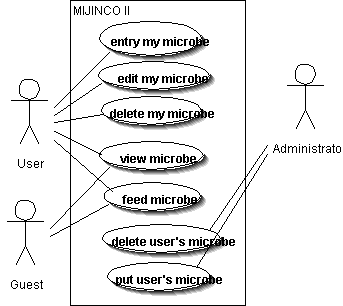

ユースケースは分析フェーズで使用される図で、システムが提供する機能を表現するために 使用されます。ユーザの要求を確認するときなど、設計の前段階で使用します。「システムがどのような人に、どう使われるか」を表すのが、ユースケース図と いうことです。ただ、このユースケース図だけでは、詳細な情報を記述できないため、ユースケース記述（シナリオ、フローなど）を使います。シナリオは具体 的な例を記述し、その際、シーケンス図や、コ ラボレーション図が使えると思います。またフローはアクティビティー図を使うといいと思います。
